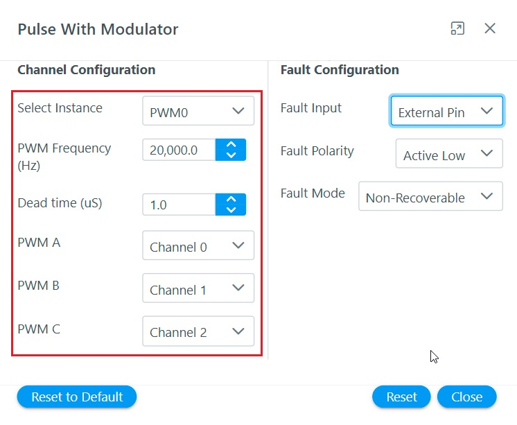

This section describes how to configure MCU peripherals for motor control application projects with Harmony Qspin
Setting PWM Interface The following section describes the PWM interfaces and how it can be configured using Harmony Qspin.
Theoretical Background The three-phase actuation voltage is applied employing the Space Vector Pulse Width Modulation (SVPWM).
Figure shows a conceptual diagram of Analog to digital conversion.
The software essentially has to perform following tasks:
Set the PWM unit and channels to be used to modulate three-phase voltages
Configure PWM peripheral's frequency, dead-time, fault management etc.
Configuring PWM Interface using Harmony Qspin In Motor Control Plant PWM Interface can be set in following steps.
Launch PWM Interface by clicking on the block
Configure PWM interface

Setting Position Interface The following section describes the position interfaces and how it can be configured using Harmony Qspin.
Theoretical Background For sensored Field Oriented Control, the position sensor interface has to be configured to process rotor position signals.
The software essentially has to perform following tasks:
Set the peripheral unit and channels to be used to for rotor position signals
Configure rotor position interface peripheral.
Configuring Position Interface using Harmony Qspin
Launch Position Interface by clicking on the block
Configure PWM interface